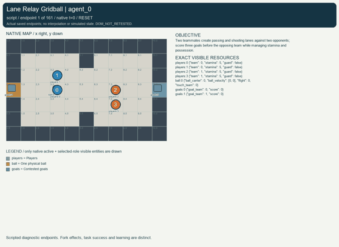
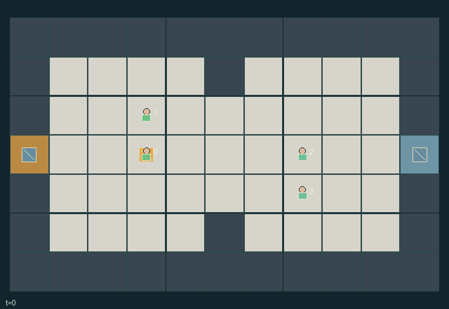

GI152 · Lane Relay Gridball

Original recording scope: Role view · Mode: Fixed-script demonstration
Additional generated state replay (different trajectory / full-state debug)

Two teammates create passing and shooting lanes against two opponents; score three goals before the opposing team while managing stamina and possession.
Identity and original contract
4 independently actionable roles; 9 discrete commands per role; 116 native observation columns per role; original horizon 160 steps. Declared per-step reward range: -1 to 1. Observation regime: fully_observable.
Source SHA-256: 5ad8900a38e4b890b8ff1ebb06a3288622bab398814e035089f9f440a9c15dc8
The objective, rewards, population, map and horizon remain original. A preview is not a success claim.
Objective and gameplay
Two teammates create passing and shooting lanes against two opponents; score three goals before the opposing team while managing stamina and possession.
Teammate alignment determines pass availability. Every flight step can be intercepted by active one-cell bracing, contact tackling can steal before launch, bodies block travel and teammate/opponent movement reshapes lanes.
- Teams are players 0/1 versus 2/3; team amber attacks right and team indigo attacks left.
- One physical ball is either possessed, in axis-aligned flight, or loose.
- An aligned pass flies at one cell per tick for at most five cells; a center-row shot travels to the opposing goal.
- Standing on the ball cell catches automatically; bracing extends reach by one cell and protects a carrier from tackles.
- Contact tackles resolve before launching; exact-cell catches outrank braced adjacent catches, then rotating player priority breaks ties.
- Action costs consume stamina; resting recovers two up to five. Blocked legal movement still spends one.
- A scoring frame retains the goal position. The next forced-wait tick restores kickoff formation and gives possession to the conceding side.
- A goal gives +1 to both scoring teammates and -1 to both opponents; there is no pass-farming reward.
- First to three ends naturally; clock 160 truncates without assigning an unearned win.
Ending: First team reaching three goals ends the match. A tied or unfinished match at clock 160 truncates without inventing a winner. Goal-round kickoffs are explicit in-match transitions, not episode resets.
What this game explores
Joint transport & shared access: Positions, load geometry, occupancy and persistent access constrain whose action can succeed next. Distinguish physical handoff, shared controls and simultaneous force from a cosmetic cooperation label.
Team opposition & interception: Cooperation within a team can coexist with opposition between teams. Preserve team membership, capture and possession rules, and report each team's outcomes instead of assuming a single shared return.
These are questions supported by rule structure, not observed learning effects.
Play it: operating walkthrough
crucibles play --game gi152Keep Python running and open its printed address. Select this game, set a seed and press Create session. The game itself is always English.
Assign a role range to Host with Assign / take over, or Assign all roles. Invite a second participant with Create player invitation, then assign a disjoint subset. Every original role is available.
For every owned role choose a legal command and press Queue. Arrow keys / WASD queue a declared directional action for the current role camera when available. Space or Advance one joint step advances everyone together. Non-directional games use the selectors.
Unqueued roles use the labelled untrained uniform-legal policy. Take over or release roles before the next step without resetting. Full-state debug is privileged and permanently logged; role cameras preserve permissions. Close the session to retain logs. Server restart does not restore sessions.
Complete command reference
IDs and English labels exactly match the manifest. Availability depends on role, resources, location and phase. An available action can still have no productive effect.
0·Rest and recover two stamina
1·Move north, spending one stamina
2·Move east, spending one stamina
3·Move south, spending one stamina
4·Move west, spending one stamina
5·Pass toward aligned teammate within five cells, spending one stamina
6·Shoot toward opposing goal from center row, spending two stamina
7·Brace: protect possession or catch within one cell, spending one stamina
8·Attempt adjacent opponent tackle, spending two stamina
Roles and capability identifiers
These original role names describe capabilities, not interchangeable skins. Check each owned role's legal selector before planning handoffs.
agent_0·Team amber, player 0; attacks right goal
agent_1·Team amber, player 1; attacks right goal
agent_2·Team indigo, player 2; attacks left goal
agent_3·Team indigo, player 3; attacks left goal
Information and observation permissions
Fully observable playing field, all entity attributes, map, clock, score, restart state and event flags. Each observation adds own player id. No separate privileged role view is needed; all declared entity visibility is true.
The GIF is full-state debug and may reveal hidden entities or private state. Train on obs[agent], not the picture, state tree or another role's private row. Field slices and visibility are in the original manifest.
Reinforcement-learning integration
import jax
from crucibles_jaxmarl import make
env = make("gi152")
key = jax.random.PRNGKey(0)
key, rk, ak, sk = jax.random.split(key, 4)
obs, state = jax.jit(env.reset)(rk)
actions = env.sample_actions(ak, state)
obs, state, rewards, dones, info = jax.jit(env.step_env)(sk, state, actions)
done = dones["__all__"]Observations are float32 vectors of width 116; actions are scalar int32; masks have 9 entries. Supply all 4 roles each transition. Masked sampling is an engineering reference, not a trained learner.
step_env retains terminal data without reset. step performs outer autoreset and keeps terminal data in info["raw_state"] and info["raw_observation"]. Use dones["__all__"] for episode boundaries; separate completion, failure and time limit in analysis.
JIT or vmap equal identities and shapes. Split independent reset, policy and transition keys. Group different shapes explicitly; do not shrink the population or horizon. Host rendering stays outside training.
Training questions and fair evaluation
Define valid completion from the objective before fitting. Preserve original rewards and also report real deliveries/services, losses, resource state, unresolved episodes and per-role returns. Animation is not a reward signal.
Positions, load geometry, occupancy and persistent access constrain whose action can succeed next. Distinguish physical handoff, shared controls and simultaneous force from a cosmetic cooperation label.
Cooperation within a team can coexist with opposition between teams. Preserve team membership, capture and possession rules, and report each team's outcomes instead of assuming a single shared return.
Compare memory, communication or centralized critics under matched actor information. Declare critic access; keep actor inputs role-filtered. Match partner/opponent distributions, masks, compute and checkpoint selection. Final tests never enter fitting or selection.
Independent training runs or source-pairing blocks are inferential units; episodes from one policy are not independent training replications. Save hashes, keys, versions, device, time and cost. Negative, zero, failed and indeterminate outcomes are valid. No trained checkpoint or target score is supplied.
Classification and evidence
Overlapping editorial labels are reading aids, not proof of novelty, difficulty, strategic equivalence or learning effects.
- Joint transport & shared access
- Evidence
scene.rules.3: Standing on the ball cell catches automatically; bracing extends reach by one cell and protects a carrier from tackles.
- Team opposition & interception
- Evidence
manifest.task.objective: Two teammates create passing and shooting lanes against two opponents; score three goals before the opposing team while managing stamina and possession.
- Evidence
manifest.task.interaction: Teammate alignment determines pass availability. Every flight step can be intercepted by active one-cell bracing, contact tackling can steal before launch, bodies block travel and teammate/opponent movement reshapes lanes.
- Evidence
manifest.task.observation_access: Fully observable playing field, all entity attributes, map, clock, score, restart state and event flags. Each observation adds own player id. No separate privileged role view is needed; all declared entity visibility is true.
Source, receipts and preview limits
The additional generated state GIF replays saved untrained legal actions through the original kernel. At most 25 actual endpoints include initial and terminal state; no invented interpolation. It is full-state debug, not the role observation. Where an original scene preview exists, it is displayed first with its own recorded information scope. The two recordings may use different trajectories and views.
Original source, observation slices, manifest and mechanism
Native receipt · Presentation receipt
Engineering passes do not establish learning. Nonzero floating differences remain recorded and undetermined; no new tolerance was introduced. Human scores remain unverified.